Master precise spatial control in Matplotlib: configure visible viewing windows with set_xlim/set_ylim, calibrate major & minor ticks, automate currency/percentage formatters, and handle orders of magnitude with logarithmic and symlog scales.
Jab aap ek plot draw karte hain, toh graph sirf line ya bars ka collection nahi hota, balki ek mathematical coordinate space hota hai. Is space ko navigate aur measure karne ke liye hum teen core mechanisms use karte hain:
| Component | Core Purpose | Primary API Functions | Real-World Example |
|---|---|---|---|
| Axis Limits | Controls visible min & max range | ax.set_xlim(), ax.set_ylim() |
Exam marks chart ko fixed 0–100 scale par set karna. |
| Ticks & Labels | Defines interval positions and values | ax.set_xticks(), ax.tick_params() |
Calendar months ya military hours (0, 4, 8, 12...) mark karna. |
| Scales | Mathematical space distribution | ax.set_xscale(), ax.set_yscale() |
Viral traffic (100 se 10,00,000) ko log scale par compress karna. |
Agar aap student marks plot karein aur limits specify na karein, toh Matplotlib tightly 70 se 95 tak zoom kar dega, jisse 72 marks pane wale student ka bar zameen par dikhega aur lagta hai wo fail ho gaya! Real perspective ke liye Y-axis (0, 100) par hona chahiye:
import matplotlib.pyplot as plt
students = ['Rohan', 'Priya', 'Amit', 'Sneha', 'Vikram']
marks = [72, 85, 78, 92, 88]
fig, (ax1, ax2) = plt.subplots(1, 2, figsize=(13, 5), dpi=150)
# 1. Default Autoscale (Misleading Y: 70 to 95)
ax1.bar(students, marks, color='#64748b', width=0.55)
ax1.set_title("[Default Limits] Deceptive Tight Zoom (Y ~ 70 to 95)")
ax1.set_ylabel("Marks Obtained")
ax1.grid(True, axis='y', linestyle=':', alpha=0.5)
# 2. Custom Limits (Realistic Academic Range Y: 0 to 100)
bars2 = ax2.bar(students, marks, color='#0284c7', width=0.55)
ax2.set_title("[Custom Limits] Realistic Perspective: ax.set_ylim(0, 100)")
ax2.set_ylabel("Marks Percentage (0 to 100%)")
ax2.set_ylim(0, 100) # Key instruction!
ax2.grid(True, axis='y', linestyle='--', alpha=0.5)
fig.suptitle("Section A: Understanding Axis Limits — Deceptive Tight Zoom vs. Realistic Context", fontsize=13, fontweight='bold', y=1.02)
fig.tight_layout()
plt.show()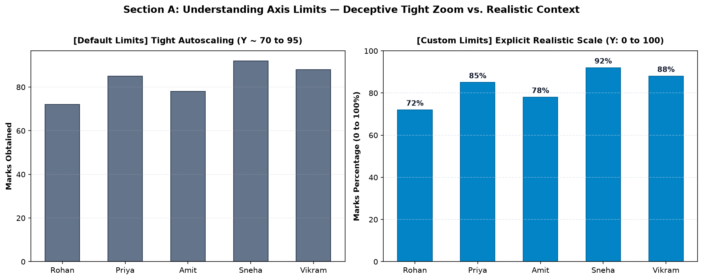
Figure 12.1: Left plot autoscales tightly between 70 and 95, visually exaggerating minor score gaps. Right plot sets realistic limits (0 to 100), presenting an honest, fair perspective.
Matplotlib mein Data Range aur Visible Range ke beech ka farq samajhna zaroori hai:
ax.set_xlim(15, 25) likhte hain, toh Day 1 se 14 ya Day 26 se 30 ka data delete nahi hota! Data memory mein exist karta hai, sirf camera frame zoom-in ho jata hai.
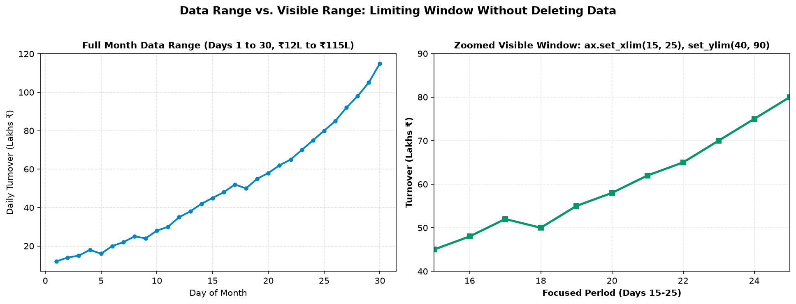
Figure 12.2: Left: full 30-day data range (₹12L to ₹115L). Right: focused visible window (Days 15–25) using ax.set_xlim(15, 25) and ax.set_ylim(40, 90). The original dataset remains intact.
Axis limits control karne ke liye Matplotlib mein do approaches hain: scripting interface (pyplot) aur production object-oriented interface (Axes):
| Pyplot Scripting API | Object-Oriented Axes API | Description & Capability |
|---|---|---|
plt.xlim(min, max) |
ax.set_xlim(min, max) |
Sets explicit left and right horizontal bounds. |
plt.ylim(min, max) |
ax.set_ylim(min, max) |
Sets explicit bottom and top vertical bounds. |
plt.xlim() (no args) |
ax.get_xlim() |
Returns current tuple (left, right). |
plt.ylim() (no args) |
ax.get_ylim() |
Returns current tuple (bottom, top). |
plt.axis([xmin, xmax, ymin, ymax]) |
ax.axis([xmin, xmax, ymin, ymax]) |
Sets all four limits simultaneously in one line. |
Agar aap chahte hain ki Y-axis hamesha zero se shuru ho, lekin upper limit data ke mutabiq automatically calculate ho, toh keyword argument use karein:
# Only anchor bottom at 0, leave top auto-calculated!
ax.set_ylim(bottom=0)
# Anchor left at 0, autoscale right bound
ax.set_xlim(left=0)Kuch practical applications mein lower number better hota hai—jaise Class Rank, Golf Score, ya Search Engine Result Position (SERP). Rank 1 graph ke top par hona chahiye, bottom par nahi! Iske liye limits ko reverse pass karein:
# Rank 1 at the top, Rank 15 at the bottom!
ax.set_ylim(15, 0)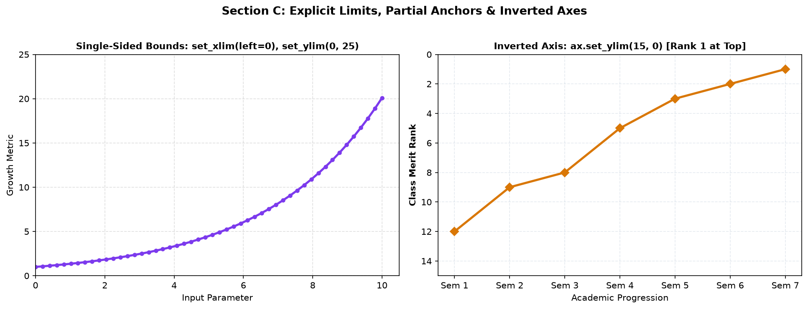
Figure 12.3: Left: single-sided limit with set_xlim(left=0). Right: inverted Y-axis where Merit Rank 1 correctly sits at the top of the chart.
By default, Matplotlib plotted points ke surrounding mein chota padding add karta hai. Lekin kai baar data points chart ke bilkul kinare (edge) ko touch karte hain.
Aap ax.margins(x=..., y=...) use karke canvas ke chaaron taraf comfortable breathing space provide kar sakte hain:
# Add 15% padding horizontally and 20% padding vertically
ax.margins(x=0.15, y=0.20)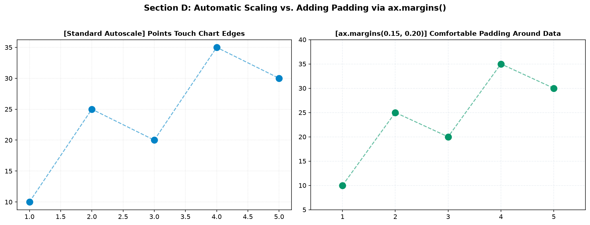
Figure 12.4: Left: standard autoscale leaves data points colliding with plot borders. Right: ax.margins(0.15, 0.20) introduces generous visual padding around points.
Axis par measurements ko articulate karne ke liye do levels ke ticks hote hain:
Minor ticks enable karne ka standard command hai: ax.minorticks_on() ya locators use karna:
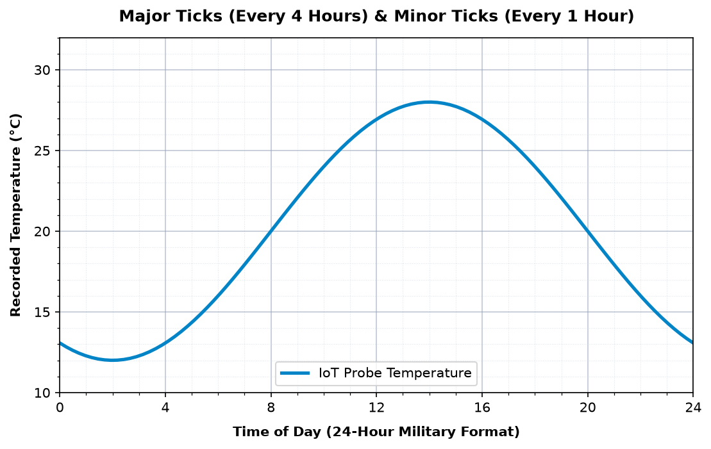
Figure 12.5: Precision time series: Major ticks with bold labels every 4 hours, and subtle minor ticks every 1 hour with dotted sub-grids.
Jab aapke X-axis par numeric indices (1, 2, 3...) ke bajaye text categories (Jan, Feb, Mar...) hon, toh modern safe practice follow karein:
month_indices = [1, 2, 3, 4, 5, 6]
month_names = ['Jan', 'Feb', 'Mar', 'Apr', 'May', 'Jun']
# Always assign positions first, then labels!
ax.set_xticks(month_indices)
ax.set_xticklabels(month_names, fontsize=9.5, fontweight='bold')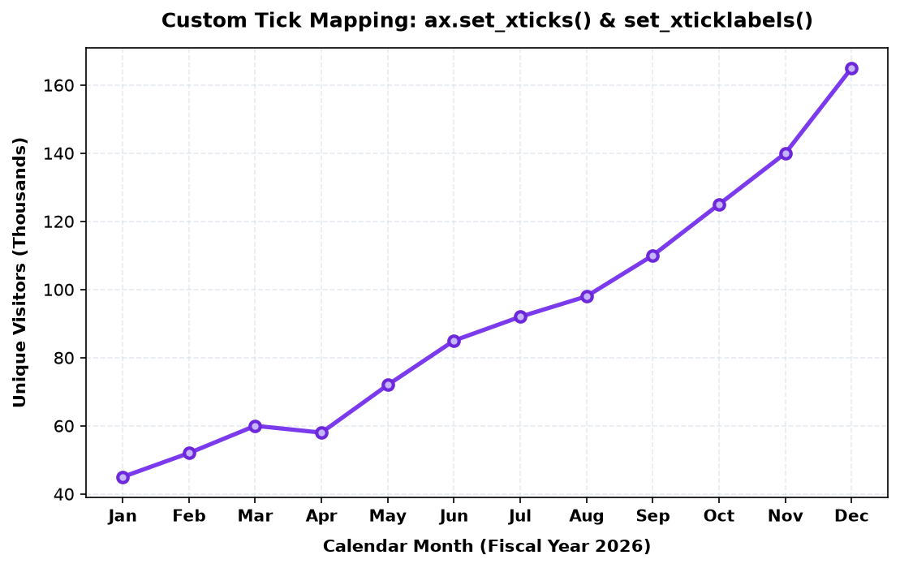
Figure 12.6: Fiscal year traffic using custom mapped month strings at calibrated numerical positions.
ax.tick_params() Matplotlib ka universal Swiss-army knife hai jo ticks ki visual appearance control karta hai:
| Parameter | Common Values | Purpose & Visual Effect |
|---|---|---|
axis |
'x', 'y', 'both' |
Kis axis ke ticks modify karne hain. |
direction |
'out' (default), 'in', 'inout' |
Tick mark border se bahar niklega ya plot ke andar cross karega. |
length |
Float (e.g. 6, 8) |
Tick mark ki physical lambai (points mein). |
width |
Float (e.g. 1.5, 2.0) |
Tick stroke ki motai (thickness). |
rotation |
Degrees (e.g. 30, 45) |
Long categorical labels ko slant/rotate karna. |
colors |
Hex code (e.g. '#334155') |
Tick mark aur uske label dono ka colour set karna. |
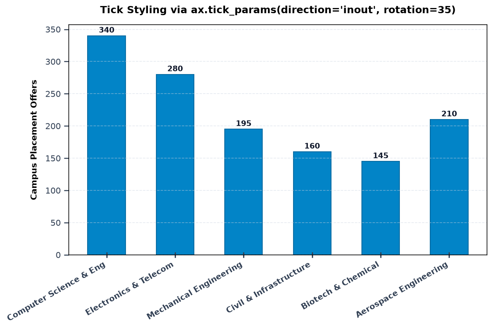
Figure 12.7: Long college engineering department names rotated 30° with ha='right', and tick direction set to 'inout' with customized stroke thickness.
Hardcoding tick lists manual aur tedious hota hai. Professional data pipelines mein matplotlib.ticker module use hota hai:
MultipleLocator(20) har 20 units par tick banata hai).1500000 ko ₹15.0L me convert karna).val/100000 divide karte hain, toh data ko pehle divide karke plot mat kijiye! Data ko hamesha raw currency me rakhein, aur display formatting ka kaam FuncFormatter par chhod dein.
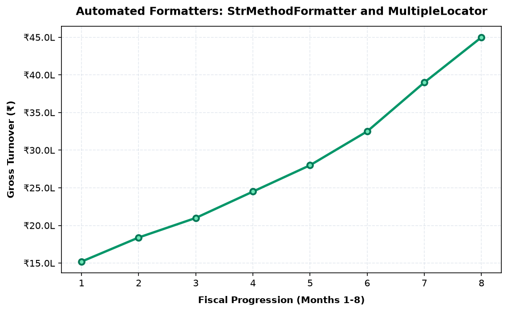
Figure 12.8: Automated revenue formatting via ticker.FuncFormatter. Raw multi-million rupee values are dynamically labeled as clean Lakhs (₹15.2L to ₹45.0L) without mutating original numbers.
Linear scale Matplotlib ka default scale hota hai. Iska fundamental rule hai:
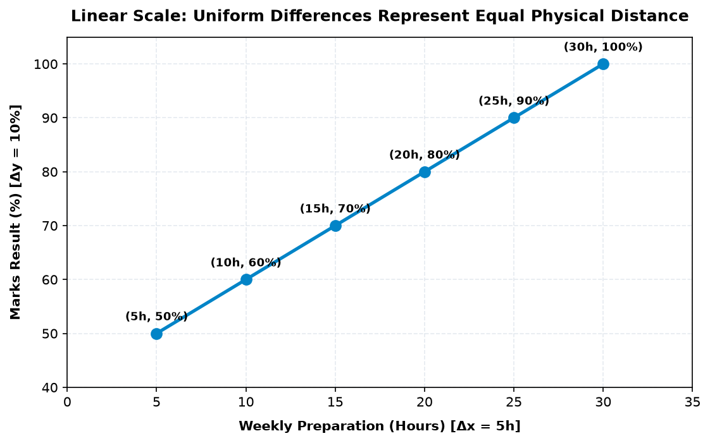
Figure 12.9: Uniform Linear progression. Every +5 hours of preparation consistently spans the same physical width on screen, corresponding to a steady +10% score gain.
Jab aapke data mein values multiple Orders of Magnitude (10x, 100x, 1000x) span karti hain—jaise viral app traffic, COVID spread, ya earthquake Richter scale—tab linear scale fail ho jata hai.
Linear scale par shuruati 100 ya 1,000 visitors ka data flat zero line par chipak jata hai, aur sirf 50,00,000 ka final peak dikhta hai. Log scale is problem ko solve karta hai:
# Enable logarithmic scaling on Y-axis
ax.set_yscale('log')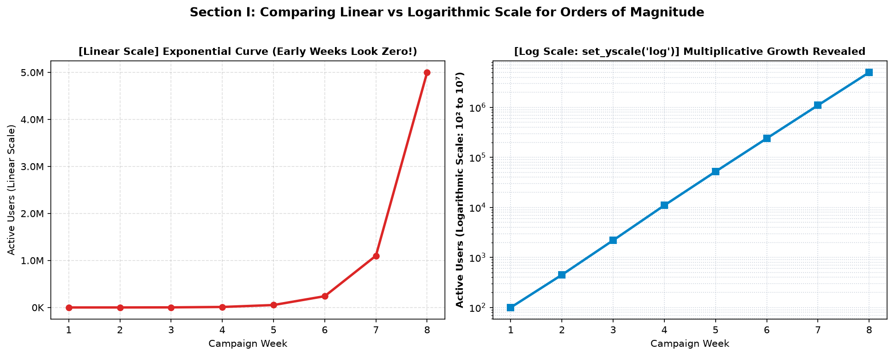
Figure 12.10: Left: Linear scale crushes early weeks (100 to 11,000 users look like a flat zero line!). Right: Logarithmic scale reveals steady, exponential multi-week traction from 10^2 to 10^7 users.
0 ya negative values hain aur aap set_yscale('log') lagayenge, toh Matplotlib points ko drop kar dega ya warning throw karega. Is case ke liye hum symlog use karte hain!
Agar aapke data mein Negative values, Zero, aur bohot bade Positive values ek sath hain—jaise business Net Cashflow ya profit/loss—toh symlog (Symmetric Logarithmic scale) use hota hai:
# symlog uses a linear scale near zero (between -linthresh and +linthresh)
# and switches to logarithmic scale for huge numbers!
ax.set_yscale('symlog', linthresh=10000)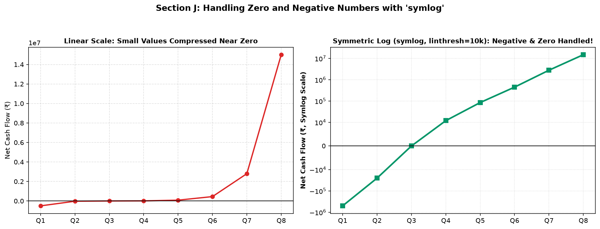
Figure 12.11: Left: linear scale obscures small operational transactions near zero. Right: symlog with linthresh=10,000 accurately plots negative losses (-₹5L), break-even zero, and multi-crore profits simultaneously.
Production enterprise charts mein yeh sabhi tools ek coordinated harmony mein kaam karte hain:
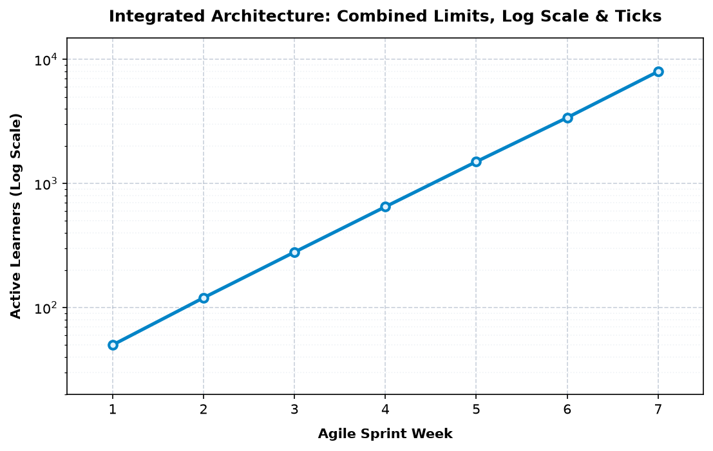
Figure 12.12: Agile Sprint active learner growth. Combines explicit bounds (0.5 to 7.5 weeks), logarithmic scale (20 to 15,000 learners), major MultipleLocators, and dual-layer grids.
Scenario: Semester exams mein 5 core computer science subjects ka class average vs highest marks compare karna with standard 0–100% academic limits:
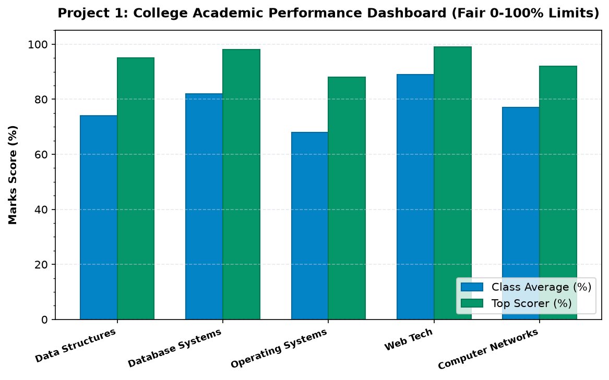
Figure 12.13: Project 1 Dashboard. Fixed 0-105% Y-axis bounds, major ticks every 20%, minor ticks every 5%, and clear grouped subject comparisons.
Scenario: H2 FY26 revenue trajectory with automated Rupee Lakhs currency formatters:
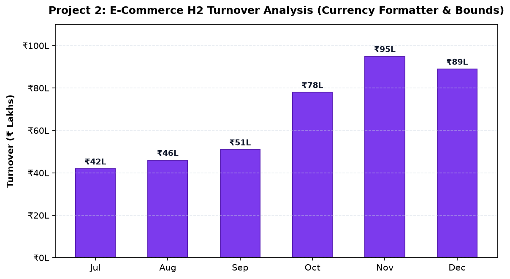
Figure 12.14: Project 2 Dashboard. Currency formatting via ticker.FuncFormatter with peak November festive sales reach ₹95 Lakhs.
Scenario: Server rack chamber temperature monitoring with focused zoom window (15°C to 45°C) and critical alarm threshold line:
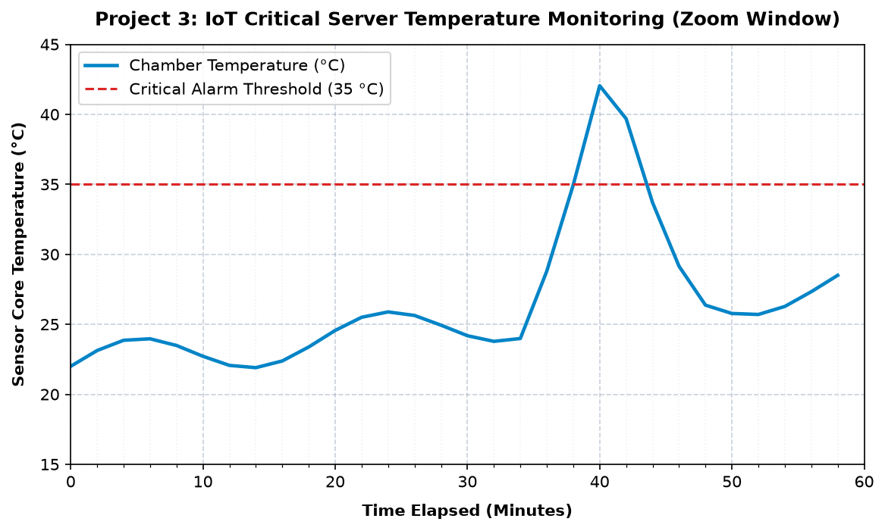
Figure 12.15: Project 3 Dashboard. Controlled time window (0 to 60 mins) capturing dangerous thermal spike peaking past the 35°C critical threshold at minute 42.
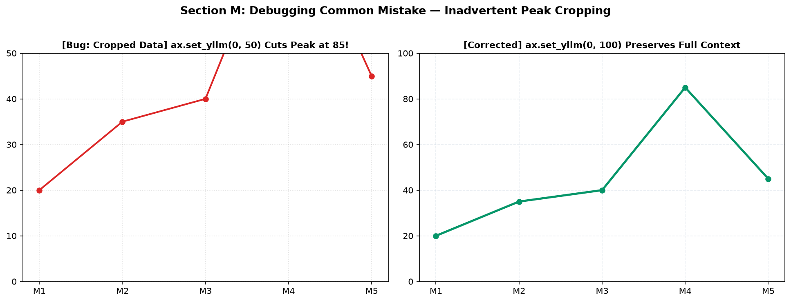
Figure 12.16: Left: manual limit set too low (ylim=0, 50) accidentally crops out Month 4's critical spike of 85 users! Right: corrected limit (ylim=0, 100) preserves full context.
Mistake: Fixed limits lagane par actual peak data cut ho jana.
Fix: Always inspect max(data) before setting upper limits.
Mistake: set_xticklabels() bina set_xticks() ke call karna.
Fix: Set explicit positions first: ax.set_xticks(range(len(labels))).
Mistake: set_yscale('log') on data containing 0 or negatives.
Fix: Use ax.set_yscale('symlog') or filter out non-positive data.
Mistake: 50 data points par 50 labels lagana, unreadable overlap.
Fix: Use MultipleLocator or MaxNLocator(nbins=6).
Mistake: Data ko pehle 1000 se divide karna aur formatter me bhi /1000 karna.
Fix: Keep data raw, scale only in the formatter lambda.
Mistake: Comparing two departments with different Y-axis heights.
Fix: Pass sharey=True in plt.subplots() or set identical limits.
| Method / Function | Arguments | Code Snippet |
|---|---|---|
ax.set_xlim() |
left, right |
ax.set_xlim(0, 100) |
ax.set_ylim() |
bottom, top |
ax.set_ylim(bottom=0) |
ax.margins() |
x, y (float ratio) |
ax.margins(x=0.1, y=0.15) |
ax.set_xticks() |
ticks_list |
ax.set_xticks([0, 10, 20, 30]) |
ax.tick_params() |
axis, rotation, length, direction |
ax.tick_params(rotation=35, length=6) |
ax.set_yscale() |
'linear', 'log', 'symlog' |
ax.set_yscale('log') |
MultipleLocator |
base (step size) |
ax.xaxis.set_major_locator(MultipleLocator(5)) |
ax.set_xlim(10, 20) set karein, toh Day 5 ka data kya hota hai?0 ya negative numbers pass karne se kya hota hai?ax.set_ylim(0, 15000).ax.set_xticklabels(labels, rotation=40, ha='right').ticker.MultipleLocator(5) for major and MultipleLocator(1) for minor.ax.set_yscale('log') and ax.grid(True, which='both').symlog scale par plot karein with a zero baseline line.ax.set_yscale('symlog', linthresh=50000) aur ax.axhline(0, color='black').Axis limits, ticks aur scaling master karne ke baad Matplotlib ka sabse visually powerful aspect shuru hota hai: Subplots, Insets & Complex Layouts!
Matplotlib Topic 13: Subplots & Layouts mein aap seekhenge:
plt.subplot() vs plt.subplots() vs GridSpec ka complete comparison.tight_layout() calibration!